简单来说就是一系列尺寸一致的单个图片横向排列组合后的图片。
在使用图片组的时候，就可以直接通过图片的排列索引直接使用指定图片。
图片组具体格式要求如下：
1、图片组中单个图片的高度 等于整个图片组位图的高度,图片组中所有单个图片的总宽度等于整个图片组位图 的宽度。
2、图片组中单个图片的宽度和高度尽量保持一致,如果不能保持一致,就使用近似尺寸 (如:高度为15,则宽度为16)。
3、图片中的透明部分用洋红色(红绿蓝分量值分别为: 255, 0, 255)填充标记。
图片组效果大致如下图所示：

作者：创世魂
● 概述
本组件通常位于软件的底边，用于显示一些当前软件状态信息。
● 项目(写)
帮助文档如下图：
通过本属性可以设计要显示的状态栏栏目信息，可以通过注释中的描述手动拼接文本，也可以通过设计器进行设计。
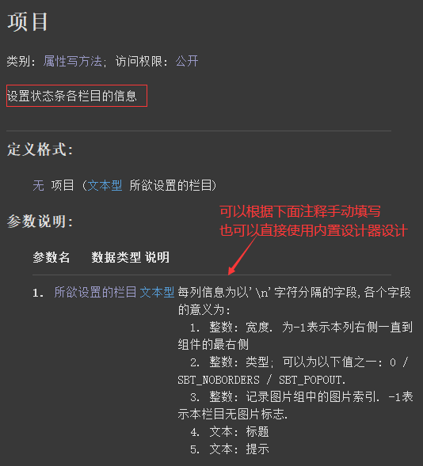
代码编写如下图：
在“状态条”组件属性栏增加“项目”属性，点击属性值按钮打开设计器。
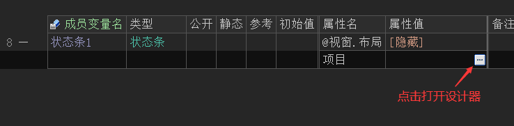
打开设计器后，首先需要点击“插入”后才能设置“内容文本”。
插入后根据自己的需求填写相关信息。
如果想要插入更多，点击“向后插入”即可。
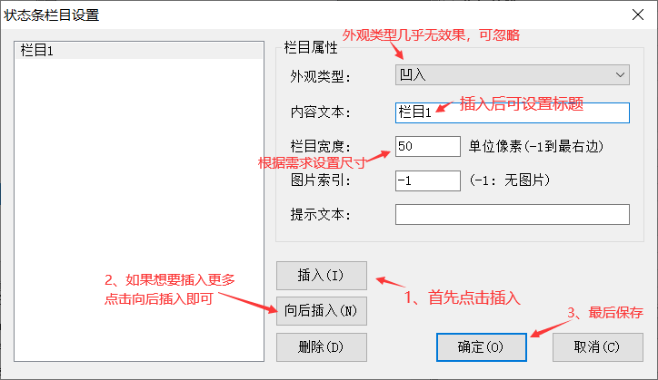
这里插入3个，并对“栏目2”设置100宽度。
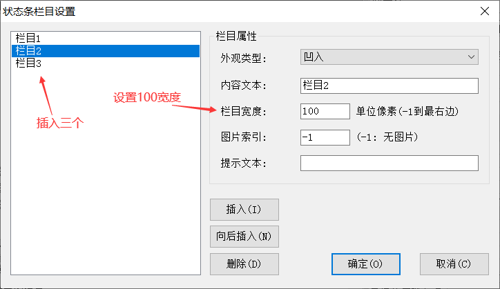
运行效果如下图：
软件运行后可以在窗口底部看到有三个栏目的文本。
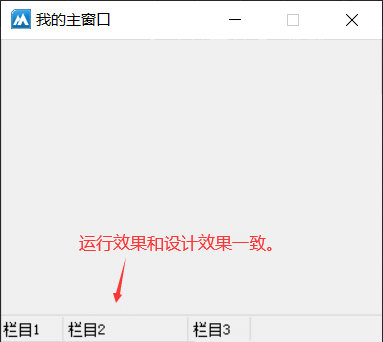
● 位置(写)
帮助文档如下图：
通过本属性可以设置当前状态条的显示位置，默认是在底部显示，可以通过本方法调整到顶部显示或者自由显示。
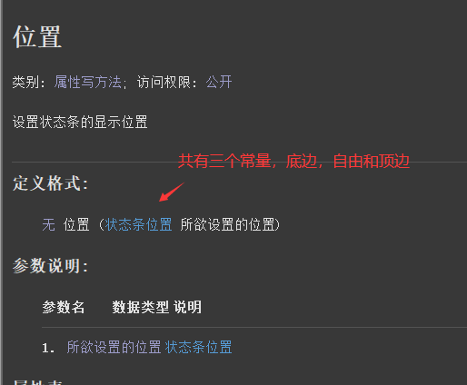
代码编写如下图：
在“状态条”组件的属性栏增加本属性并设置为“顶边”显示。
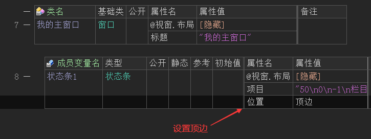
运行效果如下图：
当软件运行后可以看到，状态条会在软件的顶部显示。
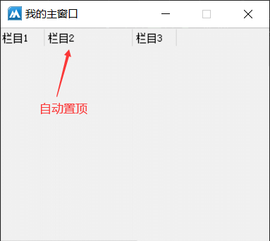
● 图片组(写)
帮助文档如下图：
通过本属性可以设置图片组资源。
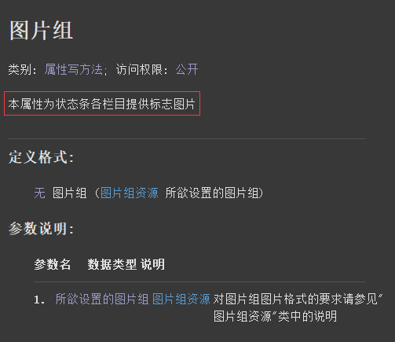
什么是图片组？
简单来说就是一系列尺寸一致的单个图片横向排列组合后的图片。
在使用图片组的时候，就可以直接通过图片的排列索引直接使用指定图片。
图片组具体格式要求如下：
1、图片组中单个图片的高度 等于整个图片组位图的高度,图片组中所有单个图片的总宽度等于整个图片组位图 的宽度。
2、图片组中单个图片的宽度和高度尽量保持一致,如果不能保持一致,就使用近似尺寸 (如:高度为15,则宽度为16)。
3、图片中的透明部分用洋红色(红绿蓝分量值分别为: 255, 0, 255)填充标记。
图片组效果大致如下图所示：
代码编写如下图：
在“状态条”的属性栏填写本属性并设置一个图片组图片。
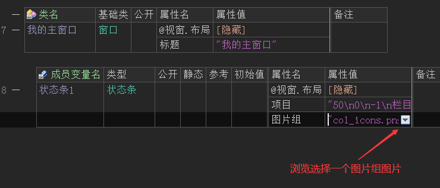
重新打开“项目”设计器，给每个栏目都设置“图片索引”。
注意：图片索引从0开始，0代表图片组的第一个图片。
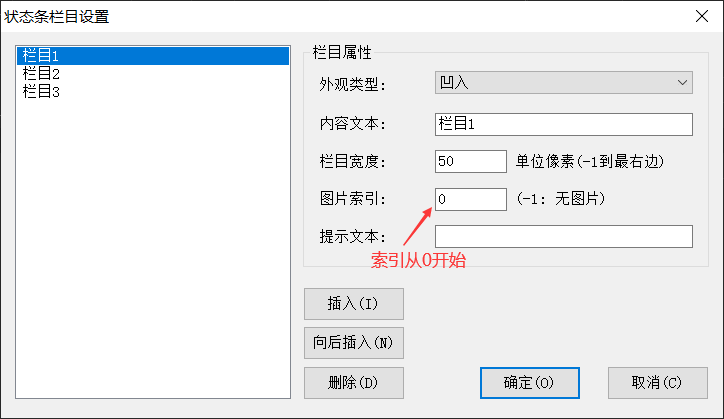
运行效果如下图：
当软件运行后可以看到，设置的图片组图片会自动分割并显示在状态栏标题前。
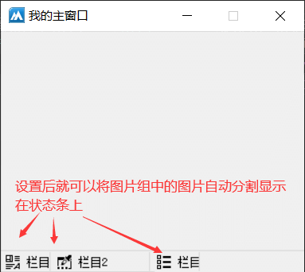
● 尺寸调节器(写)
帮助文档如下图：
通过设置本属性值为真，会在本组件的右下角位置显示一个三角图标，用于在需要调节窗口大小的时候三角图标能够起到一个指示的作用。
注意：想要本属性有效，必须即将窗口属性“窗口边框”调整为可调边框，并且“位置”属性必须设置底边。
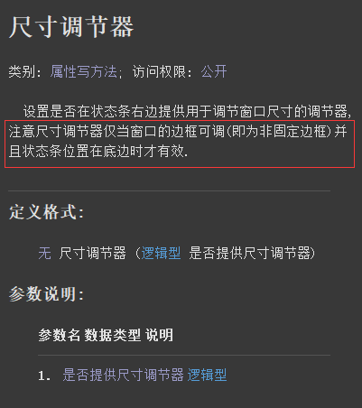
代码编写如下图：
1、首先设置“窗口边框”属性为“普通可调边框”。
2、然后设置“位置”属性为底边。
3、最后将当前属性值设置为真。
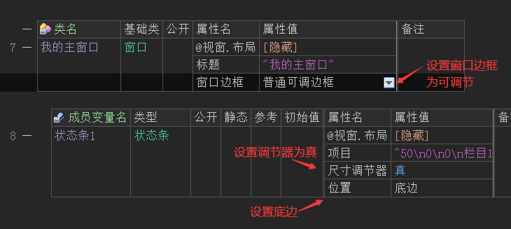
运行效果如下图：
当软件运行后可以看到，状态条组件右下角会出现一个三角图标， 可以给用户起到一个指示性的作用。
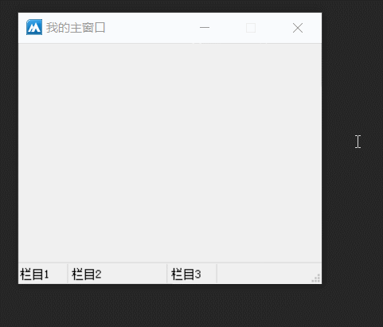
完善代码：
虽然右下角的图标可以正常显示，但是可以看到软件出现一个问题，状态条并没有一直在底边，解决这个问题也很简单。
添加窗口的“尺寸被改变”事件，在这个事件下动态的去调整“状态条”组件的“顶边”和“宽度”属性。
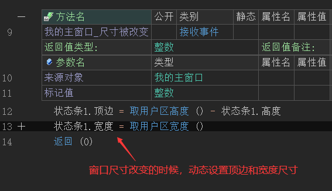
运行效果如下图：
最终可以看到软件运行正常。
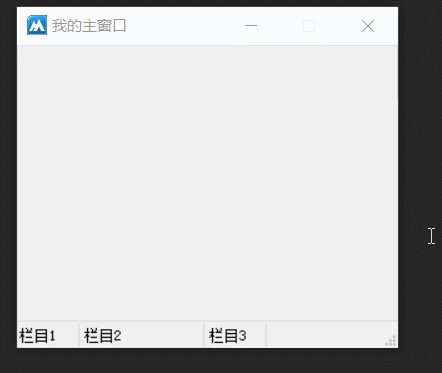
● 加入栏目
帮助文档如下图：
本方法可用于动态向状态条添加栏目，并返回新栏目的索引。
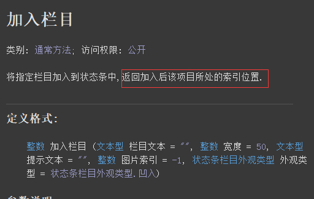
代码编写如下图：
按钮1点击后调用本方法加入栏目即可。
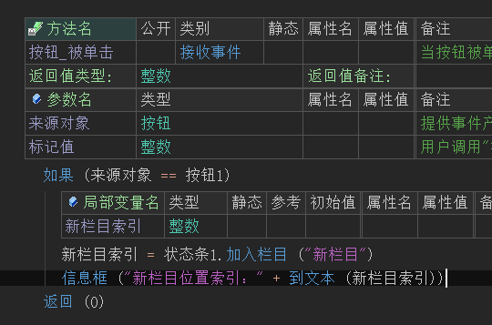
运行效果如下图：
当软件运行后可以看到，新栏目被加入并且也成功返回栏目索引。
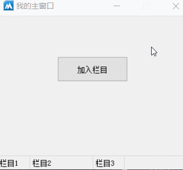
● 删除栏目
帮助文档如下图：
顾名思义，通过本方法可以实现删除指定栏目，栏目索引从0开始。
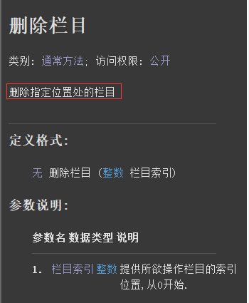
代码编写如下图：
按钮1点击后删除栏目0。
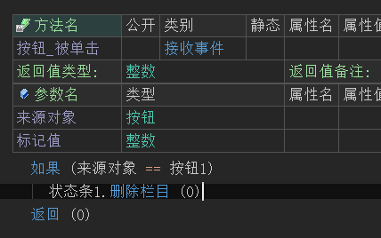
运行效果如下图：
最终可看到第一个栏目被删除。
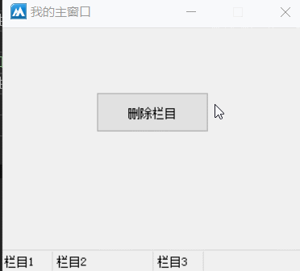
● 置图片
帮助文档如下图：
通过本属性可以动态设置图片组的图片。
参数1：提供栏目索引。
参数2：提供图片组的图片索引。
这两个参数的索引都是从0开始。
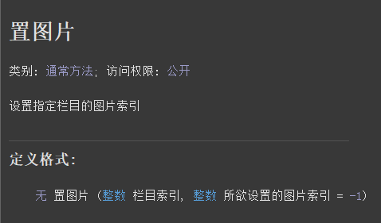
代码编写如下图：
1、首先给状态条设置图片组。
2、然后按钮点击后调用本方法给状态条设置图片组图片。
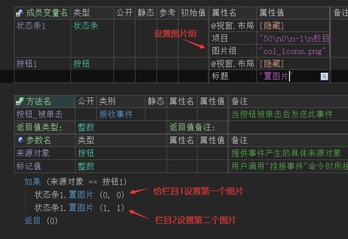
运行效果如下图：
当软件运行后可以看到，状态条的栏目增加了图片显示。
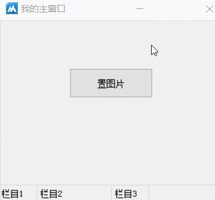
● 取图片
帮助文档如下图：
通过本方法可以取出指定栏目的图片索引，返回-1表示当前栏目无图片。
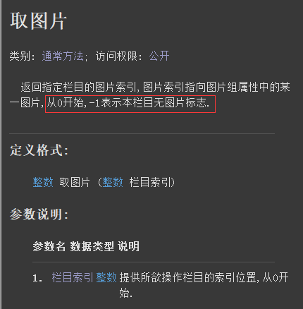
代码编写如下图：
按钮点击后取出栏目1的图片设置给栏目3。
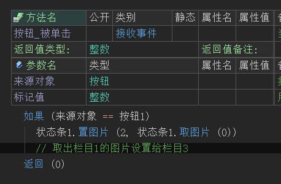
运行效果如下图：
最终可以看到栏目3的图片和栏目1一致，证明栏目图片正常取出。
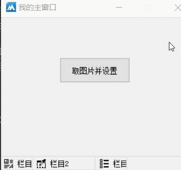
● 取宽度
帮助文档如下图：
通过本方法可以取出指定栏目的宽度，返回-1表示宽度在窗口最右边。
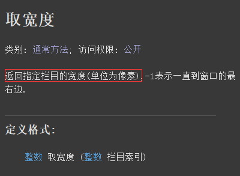
代码编写如下图：
按钮点击后取出栏目1的宽度。
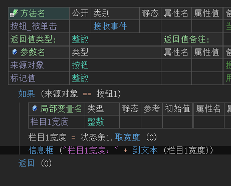
运行效果如下图：
最终栏目1的宽度将被取出。
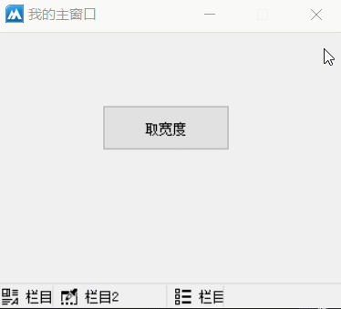
● 置宽度
帮助文档如下图：
通过本方法可以设置指定栏目的宽度，单位像素，提供-1表示宽度到窗口最右边。
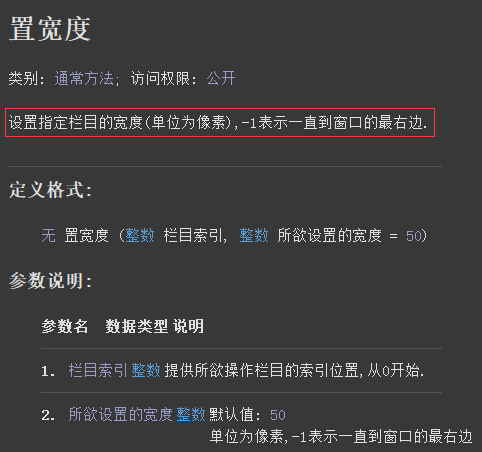
代码编写如下图：
按钮点击后设置栏目1的宽度为200。
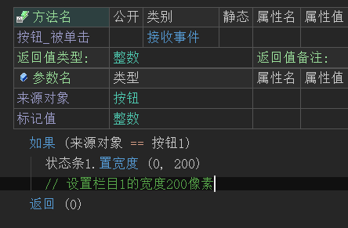
运行效果如下图：
最终可以看到栏目1的宽度发生了改变。
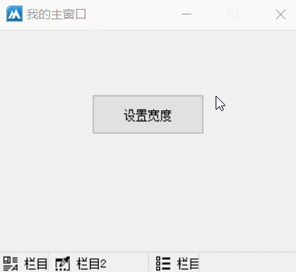
● 置提示文本
帮助文档如下图：
通过本方法可以设置指定栏目的提示文本，设置后可通过鼠标在栏目悬停后出现提示。
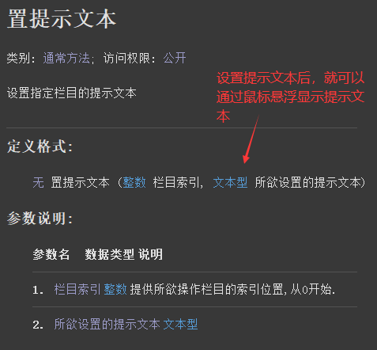
代码编写如下图：
按钮点击后调用本方法设置栏目1的提示文本。
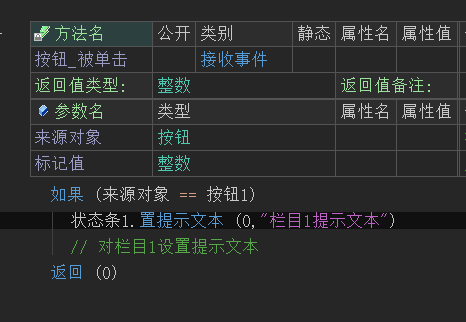
运行效果如下图：
最终按钮点击后鼠标在栏目1悬停会出现被设置的提示。
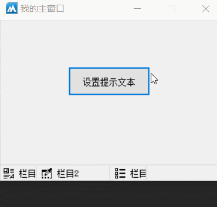
● 取提示文本
帮助文档如下图：
通过本方法可以取出指定栏目的提示文本。
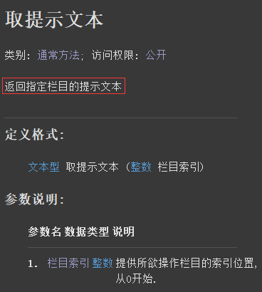
代码编写如下图：
首先打开“项目”设计器，给栏目1设置提示文本。
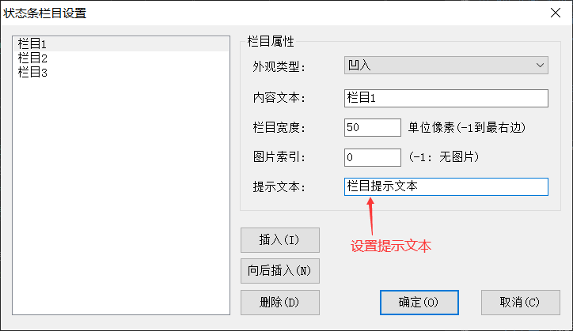
按钮点击后调用本方法取出栏目1的提示文本。
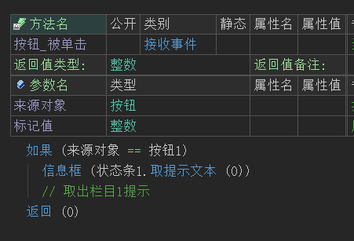
运行效果如下图：
当软件运行后可以看到，状态条的栏目增加了图片显示。
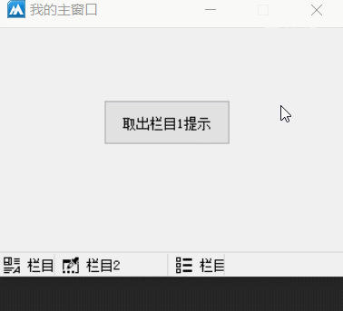
● 取文本
帮助文档如下图：
通过本方法可以取出指定栏目的文本。
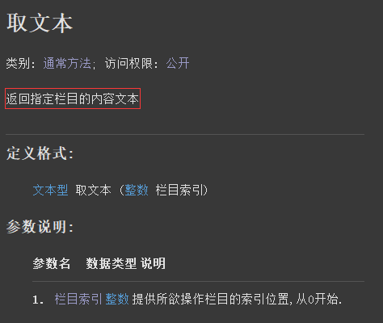
代码编写如下图：
按钮点击后取出栏目1的文本。
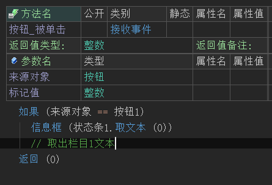
运行效果如下图：
最终栏目1的文本被取出。
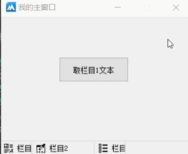
● 置文本
帮助文档如下图：
调用本方法可以更新指定栏目文本。
参数1：提供栏目索引。
参数2：提供要更新的文本即可。
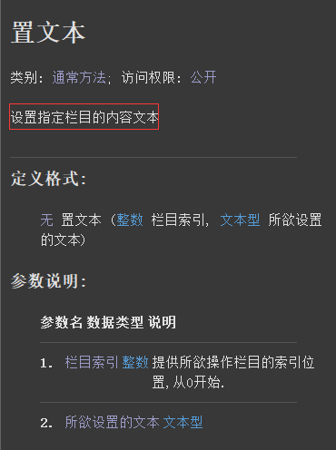
代码编写如下图：
按钮点击后调用本方法更新栏目2的文本。
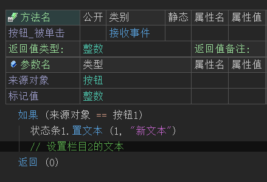
运行效果如下图：
最终可看到栏目2的文本被更新。
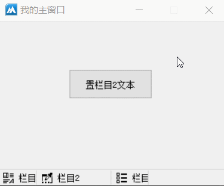
● 取栏目宽度
帮助文档如下图：
通过本方法可以取出指定栏目的实际显示宽度。
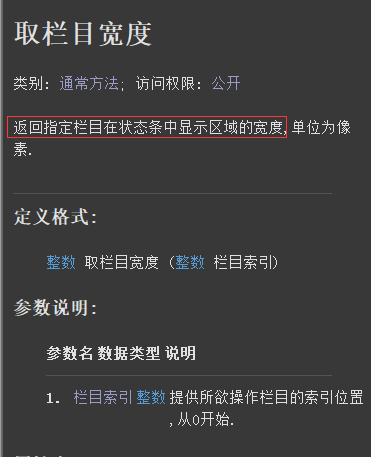
代码编写如下图：
首先打开状态条“项目”设计器，设置栏目2的宽度为100。
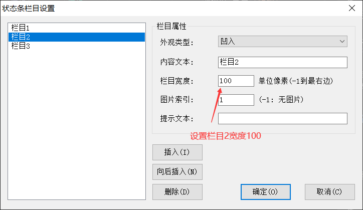
按钮点击后取出栏目2的实际宽度。
运行效果如下图：
最终可看到栏目2的实际宽度只有98，有两个像素被栏目边框占用。
● 取栏目左边
帮助文档如下图：
通过本方法可以取出指定栏目的左边位置，本方法可用于实现简单对组件排版。
代码编写如下图：
按钮点击后设置标签的左边等于栏目2的左边。
运行效果如下图：
最终可看到标签的左边与栏目2左边对齐。
● 取栏目数
帮助文档如下图：
通过本方法可以取出所有栏目数量。
代码编写如下图：
利用本方法的功能，结合“循环”可以实现取出所有栏目文本的功能。
运行效果如下图：
当软件运行后可以看到所有栏目文本被取出。
● 取栏目矩形
帮助文档如下图：
通过本方法可取出指定栏目的可显示区域的矩形位置。
注意：取出的可显示区域“顶边”，只会相当于状态条组件本身，并不会相当于窗口。
代码编写如下图：
按钮点击后取出栏目2的矩形位置并移动编辑框组件。
运行效果如下图：
最终可看到，编辑框组件的尺寸和栏目2的尺寸大小一致，利用本方法的特性也可进行简单的组件排版操作。
● 取栏目顶边
帮助文档如下图：
通过本方法可以取出指定栏目可视区域的顶边位置。
注意：此位置是相对于状态条组件本身，并不相当于窗口。
代码编写如下图：
按钮点击后取出顶边并移动编辑框组件，以实现覆盖状态条栏目2的效果。
运行效果如下图：
最终可看到栏目2被覆盖，利用本方法可以实现在状态条上显示编辑框。
注意：需要注意组件的层级关系，如果移动后发现编辑框组件消失，证明状态条组件将编辑框组件被覆盖，可使用“调整层次 ()”方法调整组件层级。
● 取栏目高度
帮助文档如下图：
通过本方法可以取出指定栏目的可视区域高度，可用于简单的美化软件操作。
代码编写如下图：
按钮点击后设置编辑框的宽度等于栏目2显示区域的高度。
运行效果如下图：
最终编辑框组件的高度被调整到和栏目高度一致。
● 更新位置
帮助文档如下图：
当状态条的父组件尺寸被改变的时候，当前组件不会自动更新位置，可通过本方法更新位置显示。
代码编写如下图：
添加窗口的“尺寸被改变”事件，然后调用本方法进行位置更新即可。
运行效果如下图：
当软件运行后可以看到状态条组件的位置正常显示，不会固定在某个地方。
● 清空
帮助文档如下图：
通过本方法可以删除状态条的所有栏目。
代码编写如下图：
按钮点击后调用本方法删除。
运行效果如下图：
最终状态条的所有栏目均被删除。